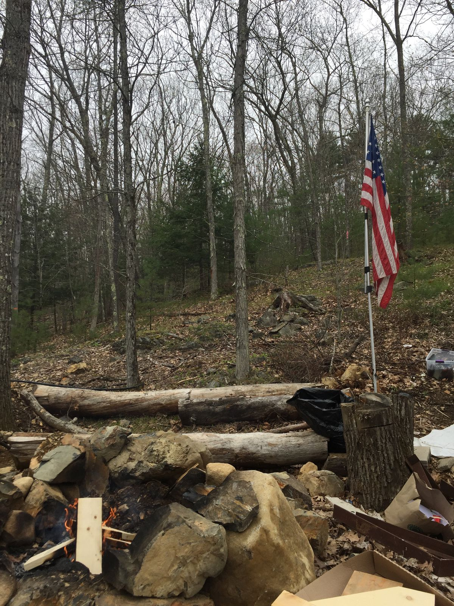
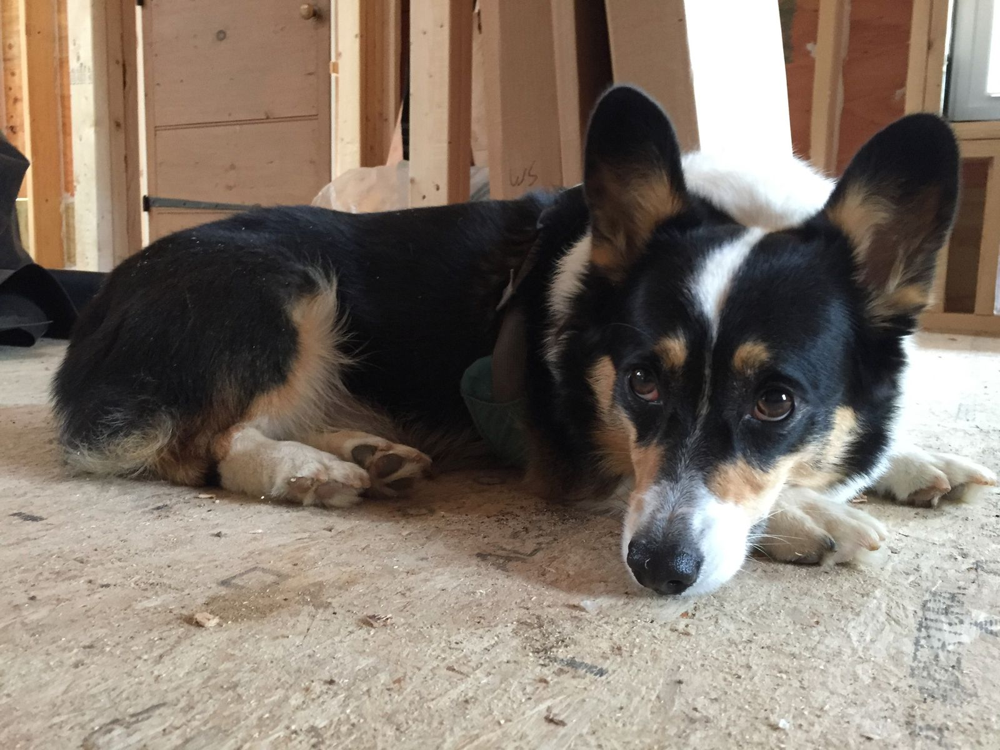

York Homestead
My cousin and his wife are building a home in York, Maine. Seeing as no rain was expected for the day, a visit seemed to be fitting for my last day before returning to work. Their land is not too far from the highway, but it feels reasonably remote. Walking to the back of the property, you're isolated from everything—you can't even see the house. The wildlife cam has spotted deer, turkeys, and a lost hiker.
When I got home, I signed into my work email for the first time in eight weeks. I only had about 600 messages, which I whittled down to 50 in almost no time.

